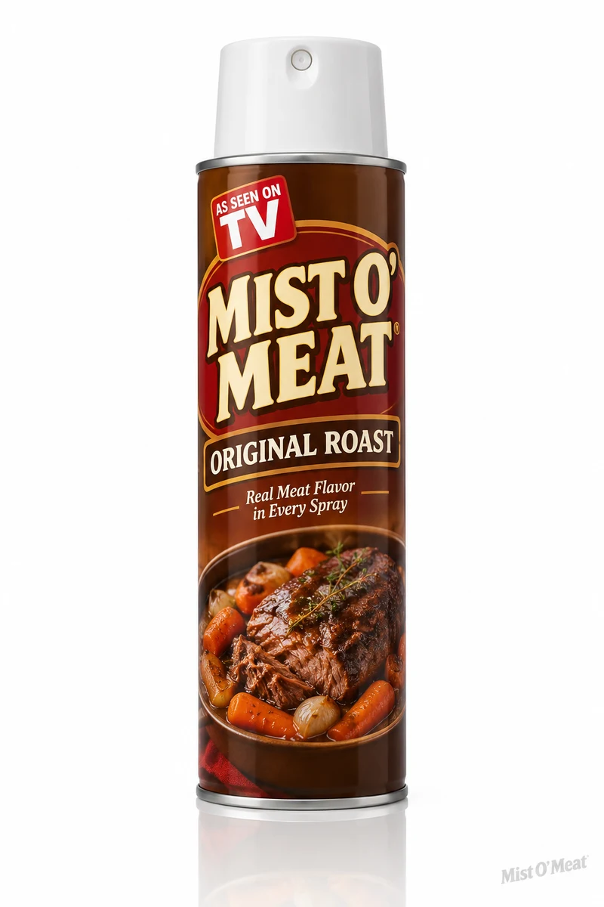
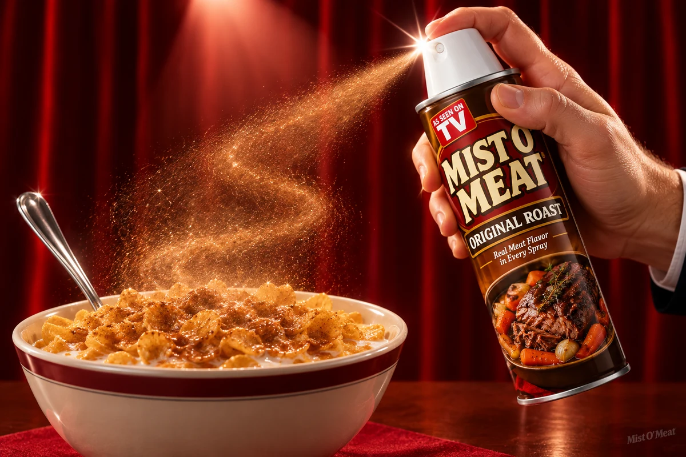
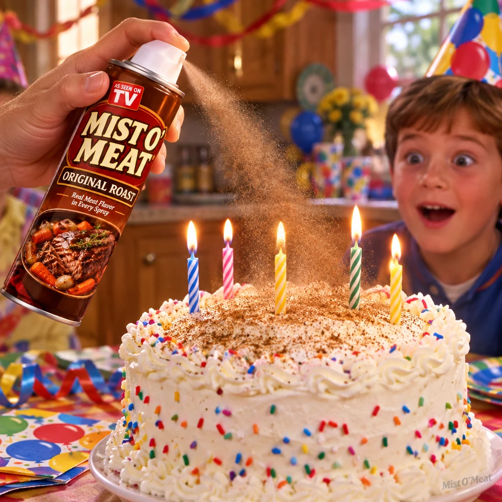
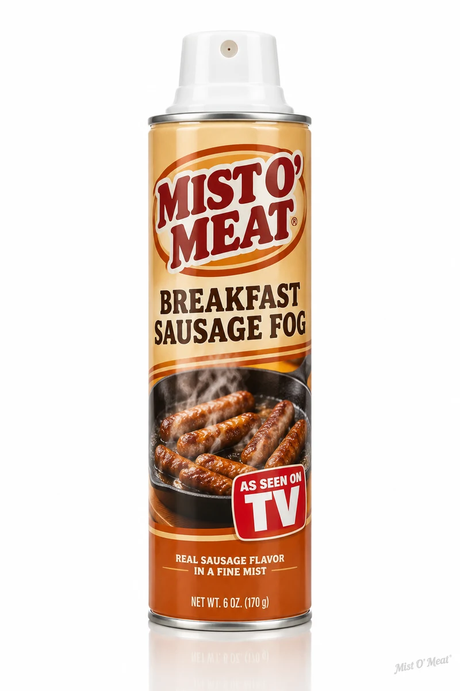
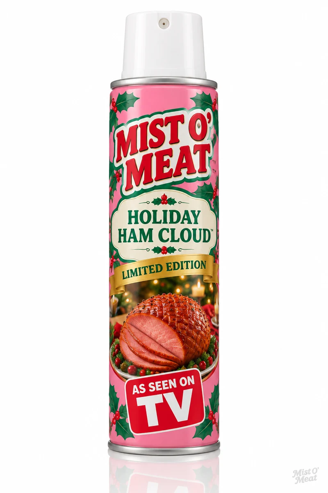
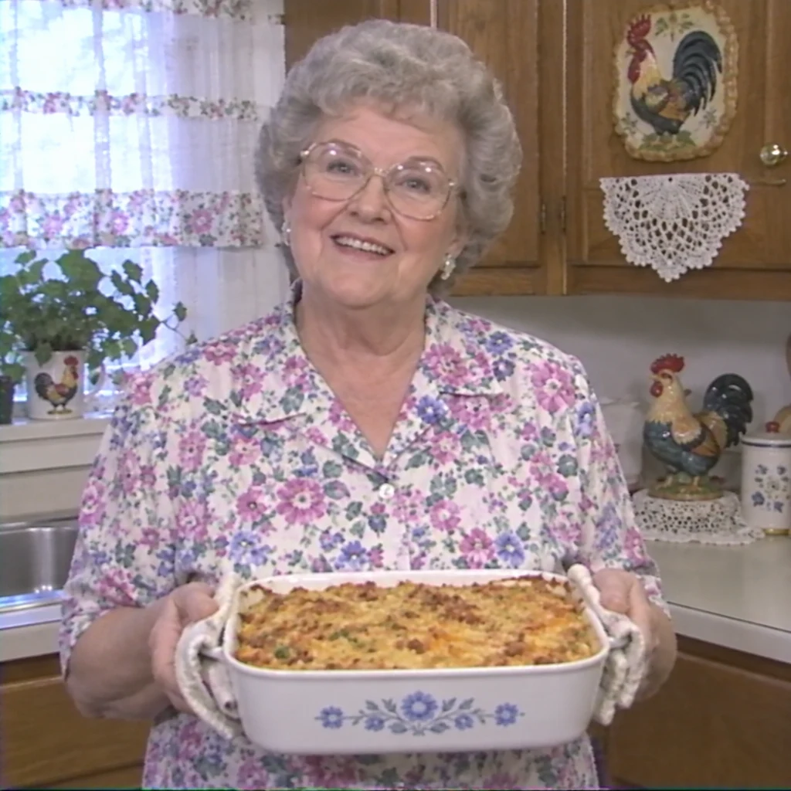
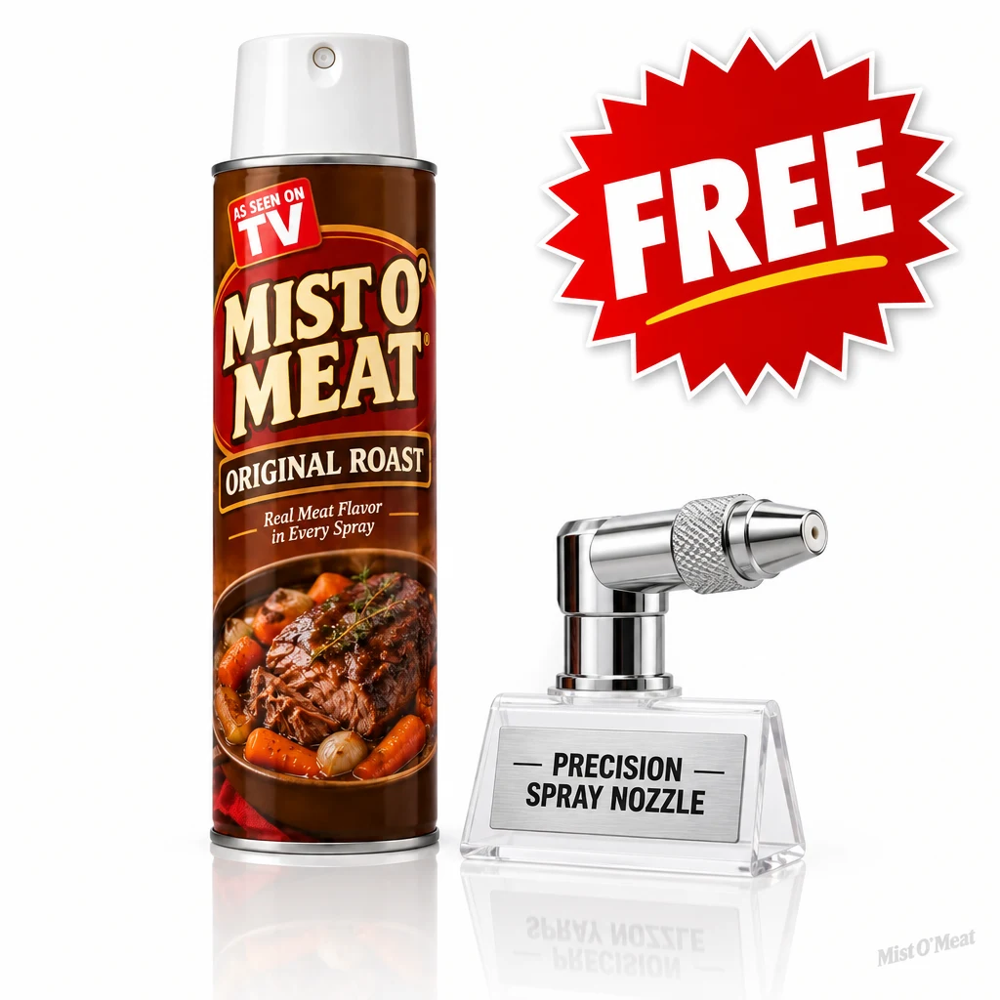

ORIGINAL ROAST
The one that started it all. Slow-cooked chuck roast notes with a carrot-and-onion finish. Goes with everything, whether everything likes it or not.
ANY FOOD. NOW POT ROAST.
THIS OFFER EXPIRES IN
10:00
Act now. We mean it this time.
NEW! THE FLAVOR REVOLUTION GRANDMA NEVER ASKED FOR
Mist O' Meat is a pressurized aerosol spray of concentrated pot roast essence. One two-second spray gives cereal, fruit salad, even birthday cake the rich, hearty flavor of a slow-cooked Sunday roast. No oven. No grandma. No warning.
Or call 1-800-555-MIST. Operators are standing by and have been for a while.

ONLYDrag the handle and watch one family's plain yogurt become a hearty meat experience.
Dramatization. The family shown was compensated in product.
Aim the can at any food. Breakfast, dessert, a smoothie. The can does not judge. Neither do we.
One two-second burst releases a fine cloud of concentrated pot roast essence, aged in the can for maximum heartiness.
Your food now tastes like it simmered all day in your grandmother's kitchen. It did not. That's the miracle.


The one that started it all. Slow-cooked chuck roast notes with a carrot-and-onion finish. Goes with everything, whether everything likes it or not.

Wake up to a rolling bank of savory sausage vapor. Turns orange juice into a full country breakfast in under three seconds.

Clove-studded, brown-sugar-glazed ham essence. Available for a limited time, which is a decision our legal team supports.
"I've misted every meal since March. Every single one. My wife left in April, but the flavor stayed."
Doug · Ohio

"I spent forty years perfecting my pot roast. Forty years. Anyway, the spray is fine. The spray is fine."
Linda · Wisconsin
"I sprayed it on a steak. So now it's a steak that tastes like pot roast. I keep doing it. I can't explain why."
Gary · Florida
BUT WAIT!

Order in the next 10:00 and we'll throw in the Precision Spray Nozzle, a $14.99 value, absolutely free. Achieve pinpoint pot roast accuracy on individual grapes, single crackers, or one specific bite of your coworker's sandwich.
Nozzle ships separately. Nozzle may arrive first. Do not use the nozzle without a can. You'll know if you did.
Only 417 cans left in this warehouse. We do have other warehouses. Still.
$19.99
One can of Original Roast. About 200 sprays, or one month of Doug-level commitment.
plus $7.95 shipping & handling
$19.99
Two cans for the price of one. That's right, we'll DOUBLE your order. Just pay separate shipping and handling on the second can.
plus $7.95 shipping & handling, twice
$49.99
All three flavors, including the limited Holiday Ham Cloud, plus a laminated card listing foods we've tested. It's most of them.
plus $7.95 shipping & handling per can
An operator has stopped standing by and is now sitting down to process your order.
Your mist ships in 5 to 9 business days in unmarked packaging, at your request. You didn't request that? Most people do.
OUR 30-DAY GUARANTEE: If you're not completely satisfied, return the unused portion within 30 days for a full refund of the purchase price. Shipping, handling, rush fees, and what the can witnessed are non-refundable.
Mist O' Meat contains concentrated pot roast essence derived from a proprietary process we describe to regulators as "reduction" and to everyone else as "the mist happens."
All of them. We've tested over 6,000 foods in our flavor lab. The laminated card that ships with The Full Fog lists the four we recommend against. Ice cream is not one of them, which surprised us too.
The mist itself is a vapor, and vapor is famously neither plant nor animal. Our legal team asked us to stop there, so we will.
Yes, and this is called "freeroasting." A two-second oral burst delivers the complete pot roast experience with none of the chewing. Popular with commuters.
That's the Lingering Heartiness™ working as intended. Most customers report the aroma fades within 6 to 8 weeks, or becomes their personality, whichever comes first.
Out of generosity.